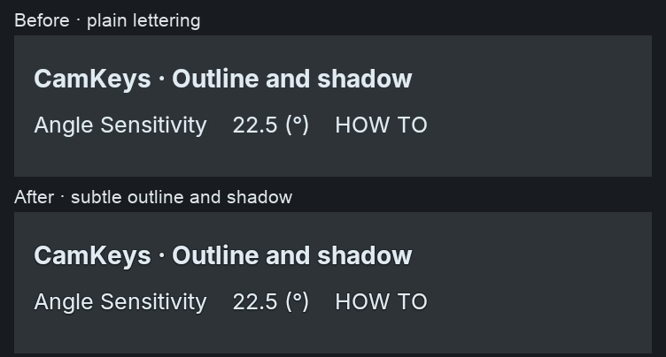

Actual Blender 5.2.2 font rendering. Shared defaults apply to panels, fields, lists and menus. Foreground lettering is composited once; both effects are configurable or can be disabled.

Blender 5.1.2 and 5.2.2: native batched output matches standalone pixels, and disabling restores plain output exactly. This focused fixture uses a neutral background; it does not replace glass validation.
Panel comparisons (before this lettering refinement) · Validation